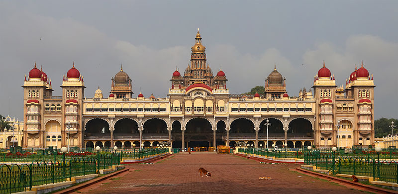

HOME
Mysore Palace

About
The "'Mysore Palace"' is a historical palace in the city of Mysore in Karnataka, southern India. It is the official residence and seat of the Wodeyars and rulers of Mysore, the royal family of Mysore, who ruled the princely state from 1399 to 1950. The palace houses two durbar halls (ceremonial meeting halls of the royal court) and incorporates an array of courtyards, gardens, and buildings. The palace is in the central region of inner Mysore, facing the Chamundi Hills eastward.
Mysore is commonly described as the City of Palaces. There are about seven palaces inclusive of this; however, Mysore Palace refers specifically to the one within the Old Fort. Built by the Maharaja Rajarshi His Highness Krishnarajendra Wadiyar IV, Mysore Palace is now one of the most famous tourist attractions in India, after the Taj Mahal, with more than 6 million annual visitors